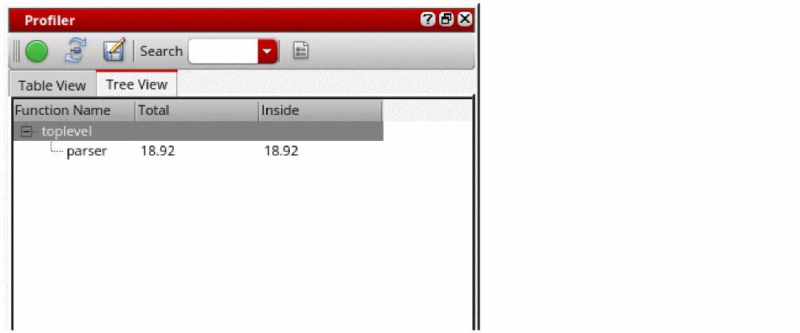

SKILL Profiler Assistant
Use the Profiler assistant to check the time and the memory consumption of your SKILL programs. You can use the Profiler assistant to accomplish the following:
- Measure the time spent in each function.
- Show how much SKILL memory is allocated in each function.
- Measure performance without having to modify function definitions.
- Display a function call tree of all functions executed and the time or memory spent in those functions.
- Filter functions so you can see only specific functions.
To open the Profiler Assistant, choose Window – Assistants – Profiler. The Profiler assistant displays.

For a video demonstration on Profiler assistant, see Analyzing Your Code Using SKILL Profiler Assistant on Cadence Online Support.
For more information of the profiler functions, see
Related Topics
Command Line Interface for SKILL Profiler
Controls Available on the Profiler Summary Report
Return to top